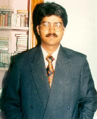

WEEKEND THOUGHTS # 26

Dear Friends,
This week's article is from a young engineer from California, Mr. Susil K Panda. Susil works for TCS and is on an assignment at EDS Unigraphics, Cypress, California. His biography is listed at the end of the article.
The article covers some interesting experiences of the author during his school and college days. He covers some topics which are still considered taboo in Indian society; and we like to think that they do not exist. However, unfortunately these things exist in Indian society like any other society in the world as is evident from the author's experience. Susil's intentions are not to harm anyone's reputation, he draws upon some of his experiences to ask some fundamental questions: Why did these brilliant students get lost in the path of life? Why do they behave the way they do? Is their family to blame for this? Is the society to blame for their behavior? What are the solutions to these ills? There are a lot of questions, but no apparent answers. Here is the article for you.
Please be aware that some portions of the article may not be to your liking. You are requested to read it with an open mind. What do the Ornetters think about the problems and behaviors pointed out by the author? You are requested to participate in a healthy discussion. Please avoid flame-wars. The author has to be commended for coming out with true experiences, which no doubt have been unpleasant to him.
Regards,
Sidhartha Mohanty (9/15/95)
(sid@aluxs.att.com)
FRIENDSHIP IN SCHOOL/COLLEGE HOSTELS, ATTITUDE AND BEHAVIOUR - AN EXAMPLE
I had thought of giving this article a different name, but later on changed my mind thinking that people might not like it. It is about my experiences in school and college hostels. It concerns the attitude of school boys in Orissa and how it changes when boys start living in hostels away from their parents. I will narrate a couple of cases.
When I went to Ravenshaw Collegiate School to study, I was just 12 years old and I was in standard 8th. I was immediately made the monitor of the class. I was so shy that I never used to look at any girl. I was staying in the hostel. In the hostel we were around 70 boys out of which 19 were in my class. Here are the stories of 2 boys who were very good students. However, they weren't able to be successful in life for some reason or the other. Now they earn their living giving tuitions to primary school kids. We should remember that all the boys staying in the hostel were top class scholarship holders getting scholarships either from the state govt. or the central govt. I have changed the names to protect the identity of these people.
J is the only son of his parents. Both his parents were school teachers. I had a good impression about J since both the parents were teachers, and I thought that he must be brilliant and he seemed very good natured. He was indeed one of the most well behaved persons I had seen. I cannot say how good he was in studies, since he was in a different section.
J and I were good friends. He used to like me a lot. There was another boy A, who was very studious, and cool. We became good friends and started moving together. To my surprise J did not like this. He asked me not to go with A. I wasn't comfortable with his behaviour. I told him that the three of us could be friends and move around together. He did not like this and slowly stopped talking to me. When we were in class X, a very smart and handsome boy came to hostel, he was in class IX. Soon we saw that J and the new boy had become good friends. Soon our hostel mates were talking about the two of them and that something bad was going on between the two. I did not know what was going on till this day came.
We had completed matricualtion and were studying in Ravenshaw college. J and I were staying in the same hostel. Our +2 exams were over and we were very relaxed. It was the day before we were supposed to leave the hostels for vacation. At this time J and I were in talking terms. I went to his room to say goodbye. I sat in his room for more than an hour. We talked about our life in school hostel. I dozed off in his bed without my knowledge.
I woke up after some time feeling some weight over me. I realized that somebody was lying over me. I was not able to turn around. The lights were off, and the mosquito net was down. I pushed J off and rushed off the bed. I realised that my trouser zip was partially open and trousers were down by a couple of inches. Maybe I woke up when my trousers were being pulled down further.
I switched on the light, I saw J lying on the bed looking at me with a shameful expression in his face. I said,"J, please come out of the mosquito net." He came out. I went to him and gave him the hardest slap I had ever given anybody. He lost his balance, fell on the floor. I pulled him up thinking that he might need medical attention. He was all right. Then I told him, "Don't ever try this again with any guy in your life. My slap will remind you, if you try again." After that I did not want to talk to him. I thought that he might have had the same intentions in school hostel too. Also whatever our hostel mates talked about him and our junior might also be true. This was a very shocking experience in my life.
Below I mention another unfortunate experience:
When K joined our school, our headmaster told his father, that this boy will rise very high in life. He was a very good student. We were good friends. Gradually, he started bunking classes and going to movies. He started asking people for money and never paid them back. And he even started stealing small things from others' rooms.
When we completed matriculation K was already a full fledged thief who was an expert in stealing things from his own friends in broad daylight. We used to call him Shovraj Junior, of course not in his face. One fine day he came to me and told me that he had given up all bad habits and was trying to become a good man. I gave him a big lecture about life thinking that he was serious. I bought him lunch and let him rest in my room for the afternoon. I was happy that I could help him correct himself. However, I was wrong. When he left in the evening, I realised that my watch was missing. I also found that around 80 rupees were gone from my shirt's pocket.
I did not have any contact with K after that since he passed +2 in third division and went to some other town for studies. There were rumours that he had gone to jail a couple of times after he was caught in some red light area. Later I heard that he has given up studies, was married, and was earning his living by giving tuitions to primary school kids.
I met him at the bus stand a year ago, when I was going home for vacation. He asked me for some money. I gave him some. He also requested me to find him a job at Bangalore (I was working at Bangalore then), as a peon or delivery boy. I told him that I would try.
Now the question is:
Who is responsible for the downfall of these two guys? They were both very good students, good-natured and intelligent when they came to school. What went wrong? This must be happening to other boys also. I do not want to answer these questions myself. People may come out with different reasons from their experience.
My schooling was in Ravenshaw Collegiate School, Cuttack I got a scholarship from central govt. - Residental Scholarship for my studies. My intermediate education was in Ravenshaw College, Cuttack. I had a national scholarship. After +2 I studied in +3 Science Geology Hons. for a year. Then I got through Engineering Entrance and joined REC in Metallurgy. I am a graduate in Mechanical Engg. from REC Rourkela, 1991 batch. After my 1st semester, I was ranked 2nd in a batch of nearly 300 students and changed my branch to Mechanical Engg., my most liked field of engineering. My professional career started with Bharat Electronics Ltd., Bangalore In REC I was selected on campus to join BEL, Bangalore. I was in the Research & Development Department. I was involved in design and development of mechanical systems of Electronics Equipments. I was working mainly in CAD/CAM tools to design and develop the mechanical systems. In 1994 July I quit BEL to work for TCS, Bangalore. Next, Tata Consultancy Services, Bangalore I was involved in software development for GEAE, Cincinatti. In May 95, I was sent to EDS Unigraphics, Cypress, California. I am here since then. What I like/hate I believe in honesty. I can claim that I have never beenlate for an appointment in my life. I hate people who value everything with money. (Maybe later I will write one more weekend thought about money.) My Hobbies Oriya poetry - I have written more than 50 poems in oriya. Couple of them were published in Ravenshaw College magazines. Most of my poems are related to life and death. An example - Jadi mun fentibi nei duAtare pApulie looha, Milibaki mote kebe rakta, Se parA mo hrudayara koha. Another example - Mrutyu achhi bhokare shosare, Mrutyu achhi nilachkre, Mrutyu achhi JagAra dhwajare. Other interests: Photography. Address: Susil K Panda 6400, Lincoln Ave # 4102 Buena Park, CA 90620 Phone: Work: 714-952-6173 Res : 714-761-1061 email: panda@ug.eds.com
Your comments are always welcome...

 Susil K. Panda
Susil K. Panda

Ride back to Home Page...
![[IMAGE]](../../wt/rath.gif)